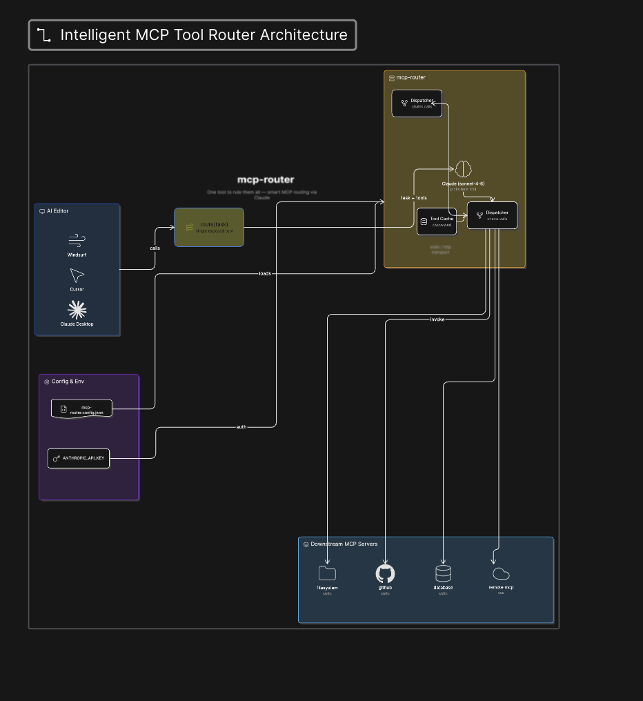

A smart MCP router that uses Claude to automatically pick and call the right downstream MCP tool from your natural language task.
AI editors connect to MCP servers to give agents superpowers — file access, GitHub, databases, Slack, etc.
The more MCP servers you add, the more tools the agent sees. With 5 servers × 10 tools each = 50 tools cluttering every prompt. The agent slows down, picks the wrong tool, or gets confused.
mcp-router proxies all your MCP servers behind a single route tool. You describe what you want in plain English — the router figures out which tool to call.
Your editor sees exactly 1 tool regardless of how many MCPs you connect
Claude reads your request and picks the best downstream tool automatically
For complex requests, Claude chains multiple tool calls in sequence
Simple flow, powerful results
See how mcp-router connects your AI editor to downstream MCP servers

Everything you need to streamline your MCP workflow
Describe tasks in plain English. No need to remember specific tool names or parameters.
Claude intelligently selects the right tool from dozens of available options.
Complex tasks? Claude chains multiple tool calls automatically and returns a single result.
Run as stdio for editors or HTTP server for remote/multi-client setups.
Customize Claude model, token limits, and max iterations per task.
~$0.001–0.003 per simple task. Negligible for occasional editor use.
Just describe what you want — mcp-router handles the rest
| You say | Router calls |
|---|---|
| "list files in /tmp" | filesystem__list_directory |
| "create a GitHub issue titled 'Bug: login fails'" | github__create_issue |
| "search for TODO in all JS files under src/" | filesystem__search_files |
| "what's in the README?" | filesystem__read_file |
Multi-step example: "Read the package.json, then create a GitHub issue summarising the dependencies" → reads file → creates issue → returns result
Get started in 3 simple steps
npm install -g mcp-router
Or run without installing: npx mcp-router
Create mcp-router.config.json in your project or home directory:
{
"mcpServers": {
"filesystem": {
"type": "stdio",
"command": "npx",
"args": ["-y", "@modelcontextprotocol/server-filesystem", "/your/path"]
},
"github": {
"type": "stdio",
"command": "npx",
"args": ["-y", "@modelcontextprotocol/server-github"],
"env": {
"GITHUB_TOKEN": "ghp_your_token_here"
}
}
}
}
Set your Anthropic API key:
export ANTHROPIC_API_KEY=sk-ant-...
Add to your editor config (Windsurf/Cursor/Claude Desktop):
{
"mcpServers": {
"router": {
"command": "npx",
"args": ["mcp-router"],
"env": {
"ANTHROPIC_API_KEY": "sk-ant-...",
"MCP_ROUTER_CONFIG": "/absolute/path/to/mcp-router.config.json"
}
}
}
}
Restart your editor — you'll see a single route tool instead of all individual tools.
Get started with mcp-router today and let Claude handle the tool selection for you.